Pictorial cancels in Saskatchewan
We have recorded 28 pictorial cancels in this province. 23 are still in use and can be requested from the post office, in person or by mail.
In use (23)
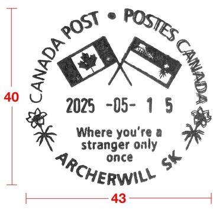
Archerwell POWhere YouActive · ?–present Caronport PO1942-1944 WWII Air Training BaseActive · 2021–present
Caronport PO1942-1944 WWII Air Training BaseActive · 2021–present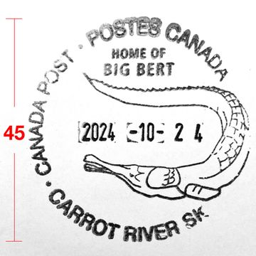
Carrot River POHOME OF BIG BERTActive · 2015–2026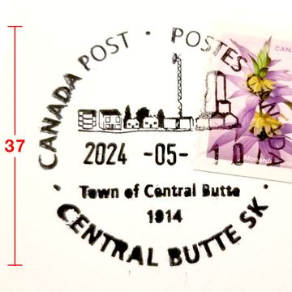
Central Butte POTown of Central Butte / 1914Active · 2021–?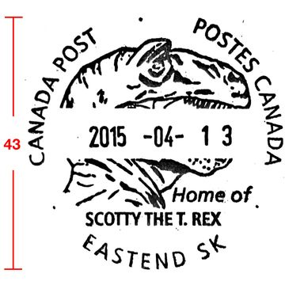
Eastend PO3rd ScottyActive · ?–?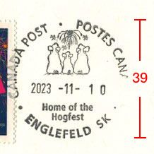
Englefeld POHome of the HogfestActive · ?–present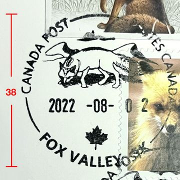
Fox Valley POFox, sand dune, maple leafActive · ?–present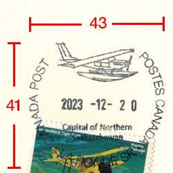
La Ronge POCapital of Northern SaskatchewanActive · ?–present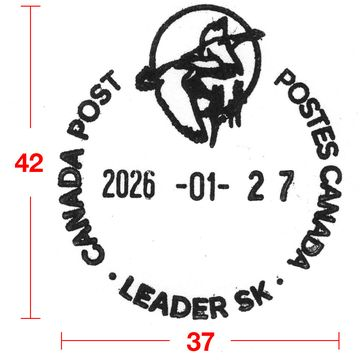
Leader PO2nd versionActive · 2024–2035 Lumsden POStep Into a Country Pace / Au rythme de la campagneActive · ?–present
Lumsden POStep Into a Country Pace / Au rythme de la campagneActive · ?–present Mendham POA Stop from Around the WorldActive · 2020–2031
Mendham POA Stop from Around the WorldActive · 2020–2031 Mozart POMozart silhouette, maple leaf, musical noteActive · 2016–2027
Mozart POMozart silhouette, maple leaf, musical noteActive · 2016–2027 Piapot POFirst nation symbolActive · ?–present
Piapot POFirst nation symbolActive · ?–present Rosthern POPost office, treeActive · 2023–2029
Rosthern POPost office, treeActive · 2023–2029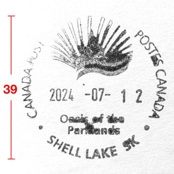
Shell Lake POOasis of the ParklandsActive · ?–present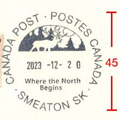
Smeaton POWhere the North BeginsActive · ?–present Spalding POWhere friends meetActive · ?–present
Spalding POWhere friends meetActive · ?–present Tisdale POThe Place to BeeActive · 2022–2027
Tisdale POThe Place to BeeActive · 2022–2027 Turtleford POStrength in Our CommunityActive · ?–present
Turtleford POStrength in Our CommunityActive · ?–present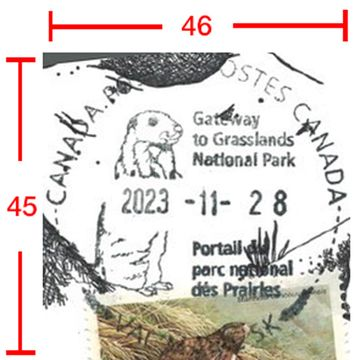
Val Marie POGateway to Grasslands National Park / Portail du parc national des PrairiesActive · ?–present Wadena POInc. 1912Active · 2022–2032
Wadena POInc. 1912Active · 2022–2032 Watrous POCBK Radio 1939Active · ?–present
Watrous POCBK Radio 1939Active · ?–present Watson POHOME OF THE ORIGINAL SANTA CLAUS DAYActive · 2020–2031
Watson POHOME OF THE ORIGINAL SANTA CLAUS DAYActive · 2020–2031
Retired (5)
 Eastend POScouts
Eastend POScouts Eastend PO2nd Scotty
Eastend PO2nd Scotty Eastend PO1st Scotty
Eastend PO1st Scotty Ponteix POHome of / Village de / MO / The plesiosaur - Le plésiossure / est. 1914
Ponteix POHome of / Village de / MO / The plesiosaur - Le plésiossure / est. 1914Other provinces and territories: Alberta · British Columbia · Manitoba · New Brunswick · Newfoundland and Labrador · Nova Scotia · Ontario · Prince Edward Island · Quebec · Northwest Territories · Nunavut · Yukon